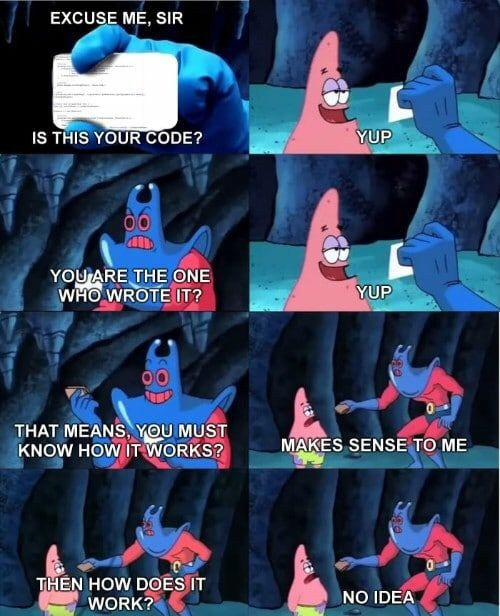

I like programming because it's a nice balance between creativity and science. Engineering was all science with hardly any creativity. Regarding the future, I don't know what it holds for me. Whether it's greatness, nothingness, or happiness I just have to wait and see. My goals are to have my own company or be involved in filmmaking somehow. I want to be a scientist as much as an artist, so I'm trying to find something that I fit with, which has yet to come. But I hope and feel being at Galvanize is a step in the right direction and I'm excited to get started.
